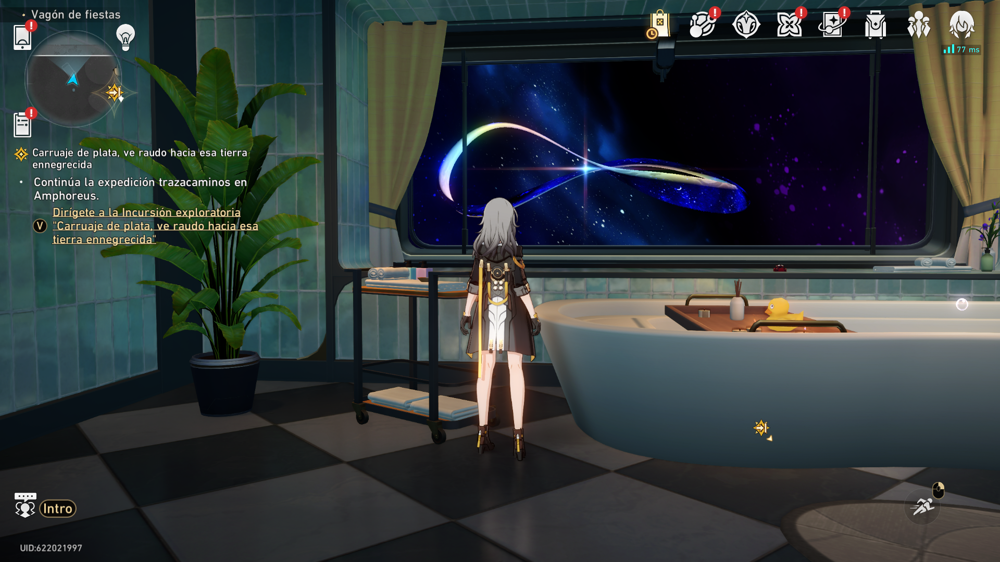
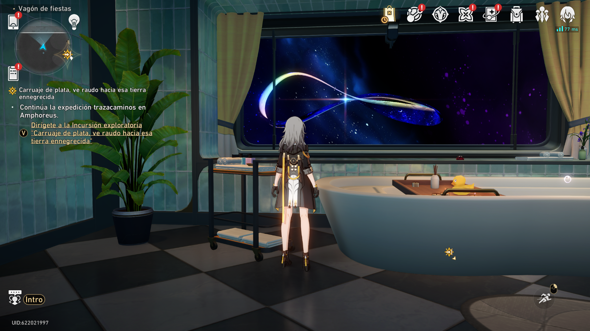

Imagen de ejemplo
La siguiente imagen ilustra una interfaz típica de un panel de tareas.
Pequeño panel para crear, listar y gestionar tareas con contenido multimedia.
Completa el siguiente formulario para registrar una nueva tarea en el sistema.
Este sistema sigue el modelo CRUD para el manejo de tareas.
En esta sección se muestran algunas tareas de ejemplo registradas en el sistema.
| Título | Estado | Creación | Acciones |
|---|---|---|---|
| Tarea 1 | Pendiente | ||
| Tarea 2 | En progreso | Eliminar | |
| Tarea 3 | Completada |
Lista rápida de estados posibles:
Pasos básicos para registrar una tarea:
En esta sección se muestra contenido multimedia relacionado con el uso del sistema.
La siguiente imagen ilustra una interfaz típica de un panel de tareas.
CRUDScope – HTML MediaPanel es una maqueta en HTML que practica el uso de etiquetas semánticas, formularios, tablas y multimedia.
El objetivo principal es entender la diferencia entre etiquetas semánticas y no semánticas, así como su impacto en la estructura del documento.